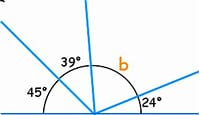

- Angles on a strainght line add up to 180
- You only can have maximum of up to 4 angles
- You can mesure up to 2 angles at a time (4 angles on a 360° protractor)
For Example:

How to solve it
You have to add 45,39 and 24 then minus the answer with 180 which equals to 72
Angle b is 72°
This can also work on angels inside the shape for example a polygon.